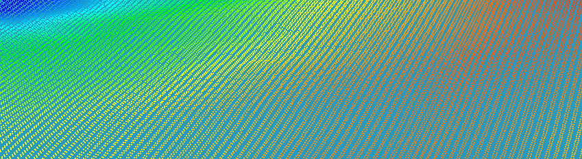
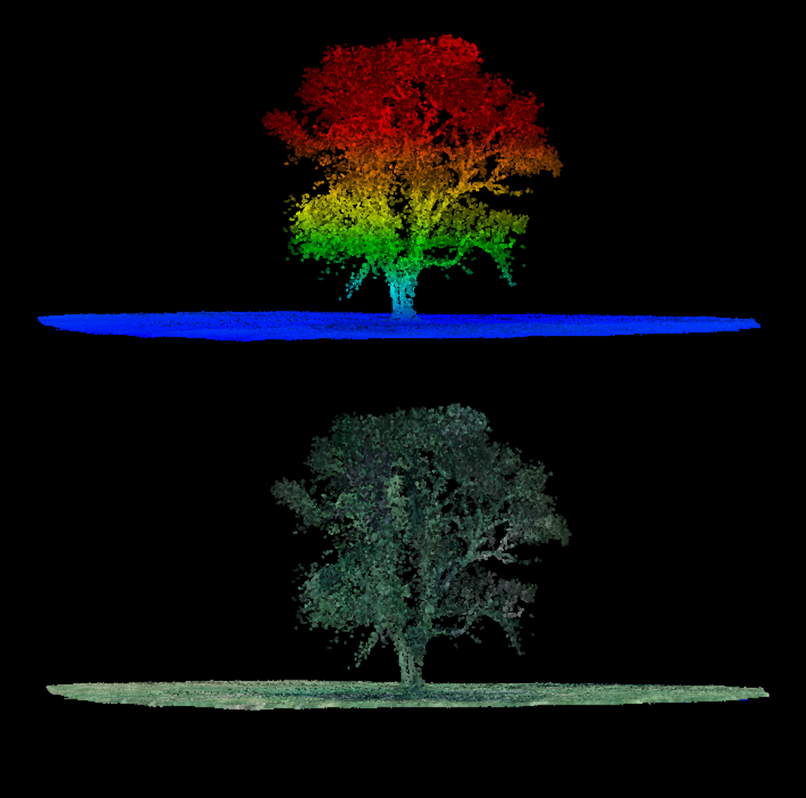
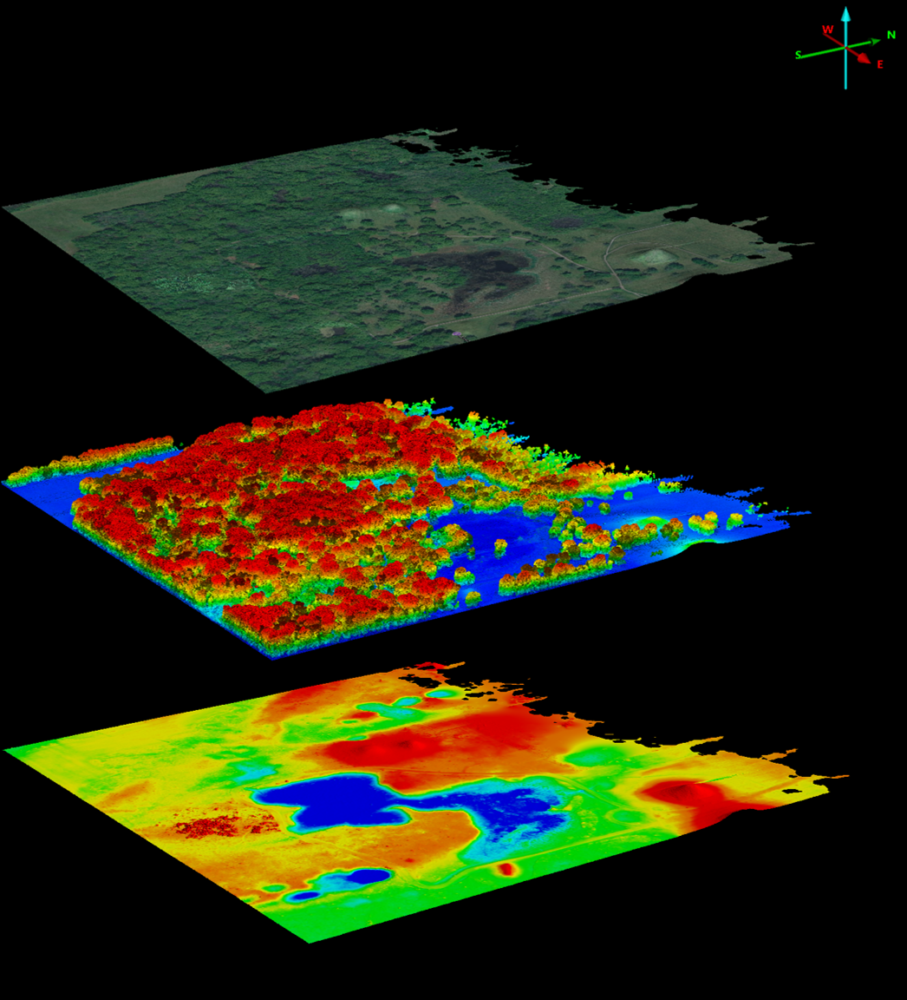
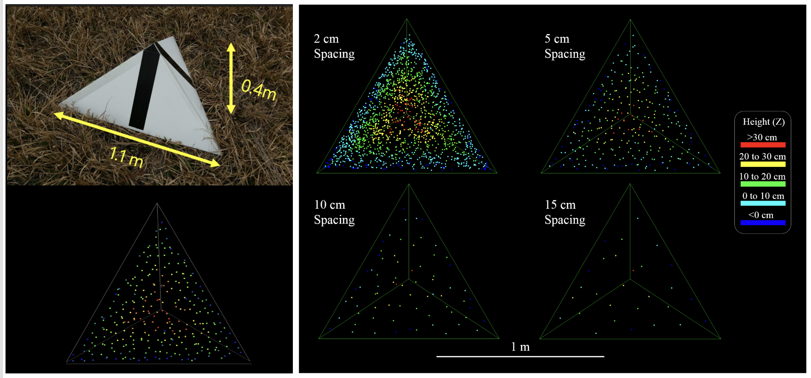
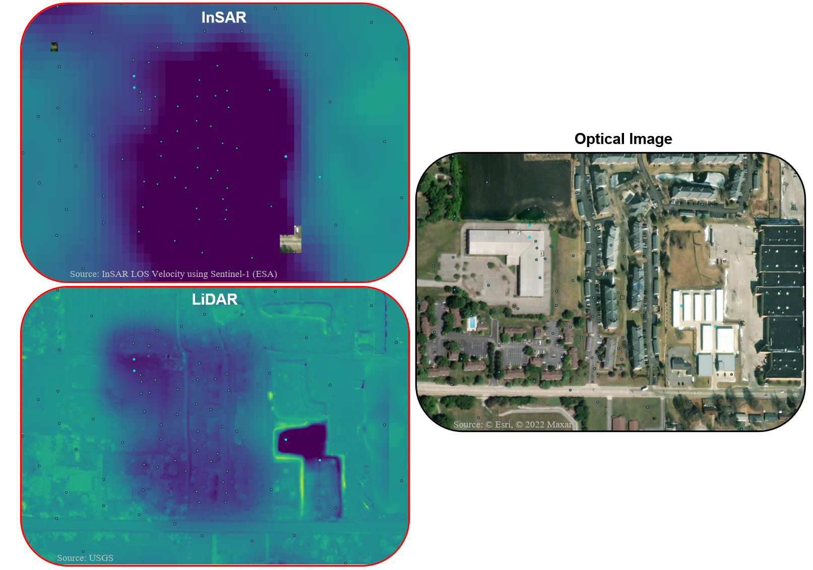

Millions of laser-ranged points that map the shape of the ground itself, in fine detail.
InSAR tracks how the ground moves; GNSS pins where a point is. LiDAR answers a third question: what the surface actually looks like, at a density neither of the others can match.
A scanner fires hundreds of thousands of laser pulses per second and times each return. The result is a dense three-dimensional point cloud of the terrain and everything on it, from which a high-resolution elevation model is built.
Each pulse returns the range to whatever it hits. A single pulse can produce several returns as it passes through gaps in a tree: the first off the canopy, the last off the bare ground beneath. That multi-return behaviour is what lets LiDAR see the terrain under vegetation.
Classifying the points separates ground from vegetation and buildings, giving two products: a digital surface model covering everything, and a bare-earth digital terrain model, which is the one that matters for studying the ground.

Range comes from the pulse's time of flight; position comes from the platform's GNSS and inertial unit. Together they place every return as an x, y, z point, often many points per square metre. Ground-filtering and gridding turn that cloud into a continuous elevation model.
Shaded relief of a bare-earth model exposes fine morphology that is invisible from the ground or under canopy: drainage channels, terraces, fault scarps, and the subtle topographic expression of slow deformation.

Relative accuracy describes the internal consistency of the point cloud, specifically how well adjacent flight strips agree after strip adjustment. It is typically sub-centimetre and rarely the limiting factor in practice.
Absolute accuracy is how close the georeferenced points are to true ground coordinates. It depends on GNSS/IMU quality, system calibration, and the number and distribution of ground control points used during processing.
The ASPRS Positional Accuracy Standards define vertical accuracy thresholds using RMSEz at 95% confidence, split by land cover type:
For large-scale programmes such as the USGS 3D Elevation Program, ASPRS classes map to specific Quality Levels that set both accuracy and pulse density requirements:
| Quality Level | RMSEz | NVA (95%) | VVA (95th pct) | Min pulse density |
|---|---|---|---|---|
| QL0 | ≤ 5 cm | ≤ 9.8 cm | ≤ 14.7 cm | ≥ 16 pts/m² |
| QL1 | ≤ 10 cm | ≤ 19.6 cm | ≤ 29.4 cm | ≥ 8 pts/m² |
| QL2 | ≤ 15 cm | ≤ 29.4 cm | ≤ 44.1 cm | ≥ 2 pts/m² |
Knowing the accuracy of a LiDAR dataset requires comparing it against independently surveyed ground truth: reference points whose true coordinates are measured to higher precision than the sensor itself. Without them, accuracy is a claim, not a measurement.
The most direct approach is to survey check points on well-defined surfaces such as hard pavement, rooftops, or other flat, high-reflectivity areas where laser returns are unambiguous. In natural scenes without such structures, practitioners often deploy artificial targets: painted panels, flat boards of known height, or elevated reflector arrays placed before the flight and surveyed by GNSS or total station.
Flat targets carry a practical problem, however. Intensity values vary between sensors, making targets hard to distinguish from background in natural environments. Precisely locating the horizontal reference point, usually the centre of the panel, is also unreliable when only a sparse scatter of points falls on the target.
Wilkinson et al. (2019) addressed these limitations with a triangular pyramid target designed for UAV LiDAR. Instead of relying on intensity, the pyramid uses geometry: three sloping faces intersect at a sharp apex, and the apex position is recovered by fitting a 3-D template to the point cloud in a least-squares sense. The result is a precise horizontal and vertical reference in a single structure.
The design is practical in the field — 1.1 m sides, 0.4 m tall, corrugated plastic that folds flat for transport (≈ 20 per crew member). At point densities above 100 pts/m² the algorithm resolves the apex to roughly σ = 1 cm in X, Y, and Z. The targets can serve for accuracy assessment, strip adjustment, boresight calibration, or as ground control points, and the least-squares output includes per-target uncertainty estimates so outlier targets can be flagged automatically.

Reference: Wilkinson, B. et al. (2019). Geometric targets for UAS lidar. Remote Sensing, 11(24), 3019. doi:10.3390/rs11243019 · LiDAR Magazine blog
LiDAR is the quiet foundation of an InSAR workflow. A high-resolution DEM is what's used to remove the topographic phase from interferograms, so residual signal can be read as ground motion rather than relief. Get the terrain wrong and you bake error straight into the velocities.
Beyond processing, when multi-temporal LiDAR acquisitions are available, differential LiDAR gives you something a single scan cannot: a true 3-D picture of how the surface has changed between campaigns. Volumetric loss, lateral spread, and vertical displacement can all be quantified at centimetre resolution. What it cannot tell you is what happened in the months between flights. Slow deformation can accelerate, reverse, or change character between acquisitions, and those transitions are invisible in the gap.
This is exactly where InSAR takes over. Sentinel-1 passes every 6 to 12 days and accumulates a continuous displacement time series that bridges every gap in the LiDAR record. The two sensors are complementary by design: LiDAR delivers geometry and volume at a single moment; InSAR delivers continuity and regional displacement scale across years. Neither alone tells the full story.
The part I find most interesting is using machine learning to analyse the relationship between these two data streams and fuse them into a single, higher-resolution product. By mapping sub-pixel InSAR uncertainties onto the LiDAR point cloud, it becomes possible to resolve deformation at the scale of individual buildings and parcels, pinpointing exactly which structures are undergoing differential settlement. That matters for infrastructure risk: a bridge or a row of terraced houses can show measurable relative movement that a regional InSAR grid would smooth over entirely.
